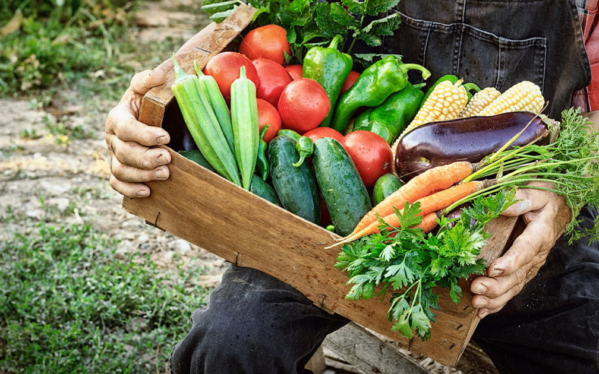
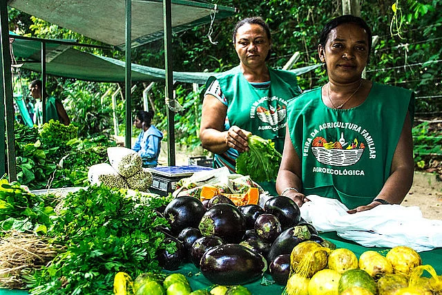

Por que a Agricultura Familiar é Tão Importante?
Mais da metade dos alimentos que chegam à nossa mesa vêm das pequenas propriedades rurais. Eles cultivam com carinho, preservam o meio ambiente e fortalecem a economia local.

Alimento de Verdade
Frutas, verduras, legumes frescos e sem agrotóxicos. A agricultura familiar prioriza a qualidade e a saúde!

Sustentabilidade no Campo
Muitos agricultores familiares utilizam práticas ecológicas, cuidando do solo, da água e da biodiversidade.
fungicide

Fortalecimento Local
Ao comprar do agricultor familiar, você ajuda a manter as famílias no campo e impulsiona a economia da sua região.
Como Podemos Ajudar?
Prefira alimentos de feiras livres, mercados de produtores e cooperativas. Apoie quem produz com amor e dedicação!
Saiba Mais!